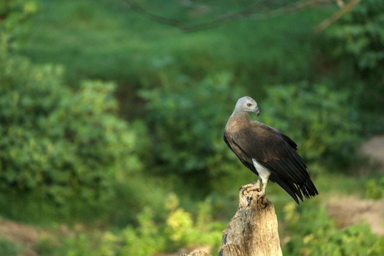
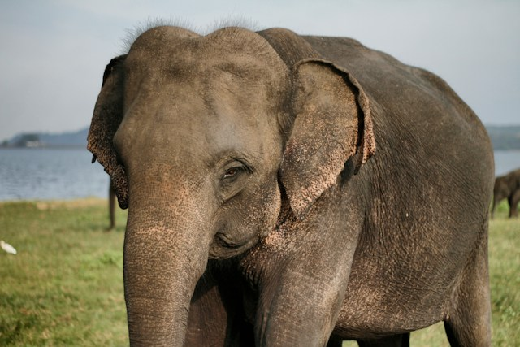

SRI LANKAN SLOTH BEAR
The Sri Lankan sloth bear (Melursus ursinus inornatus ) is a subspecies of the sloth bear which is found mainly in lowland dry forests in the island of Sri Lanka.The Sri Lankan sloth bear is highly threatened, with a population less than 1000 (the wild population may be as few as 500) in many isolated populations with population decrease. Destruction of dry-zone natural forest is its main threat because unlike other large Sri Lankan animals, the Sri Lankan sloth bear is highly dependent on natural forests for its food source. An increase in sloth bear-human interaction has also caused many conflicts. These conflicts include death and injury to humans, livestock loss, damage to property, and retaliatory killing of wildlife causing humans to fear this species
SRI LANKA BLUE MAGPIE
The Sri Lanka blue magpie or Ceylon magpie (Urocissa ornata ) is a brightly coloured member of the family Corvidae, found exclusively in Sri Lanka. This species is adapted to hunting in the dense canopy, where it is highly active and nimble. Its flight is rather weak, though, and is rarely used to cover great distances. In spite of the Sri Lanka blue magpie's ability to adapt to the presence of humans, it is classified as vulnerable to extinction due to the fragmentation and destruction of its habitat of dense primary forest in the wet zone of southern Sri Lanka.
SRI LANKAN KRAIT
The Sri Lankan krait is small and slender. On hatching, the length of the snake is about 250 mm (9.8 in). The average adult length for this species is 75 cm (29+1⁄2 in) with 90 cm (35+1⁄2 in) being the upper limit.Its black skin is crossed with thin white transverse bands. It has an extraordinarily long lung which it inflates when angry.It is very slow and sluggish by day. At night it may strike after considerable provocation, but behaves quite the contrary by day, often allowing itself to be handled or even bullied with impunity. During such rough treatment it usually does nothing but puff up its lung to display its discomfort.

CHESTNUT-BACKED OWLET
The chestnut-backed owlet (Glaucidium castanotum ) (often misspelled Glaucidium castanonotum ), is an owl which is endemic to Sri Lanka. This species is a part of the larger grouping of owls known as typical owls, Strigidae, which contains most of the smaller owl species. This species was formerly considered to be a subspecies of the jungle owlet. Historical reports of its distribution by Legge include many parts of the southern half of Sri Lanka, especially the hills and the wet-zone low country extending to the outskirts of Colombo. In recent times, its range has shrunk greatly, and it is now found sparingly in the remaining forests of the wet zone and the adjoining hills at altitudes of up to 6500 ft above sea level.
Yala National Park

Explore the wonders of Yala National Park, where the thrill of a safari awaits, offering a unique opportunity to witness the untamed beauty of Sri Lanka's wildlife, including elusive leopards and majestic elephants.
Learn More
Wilpattu National Park

Embark on a journey to Wilpattu National Park, a pristine wilderness sanctuary, where lush landscapes and serene lakes provide a tranquil backdrop to encounter Sri Lanka's diverse wildlife, from elusive leopards to vibrant bird species.
Learn More